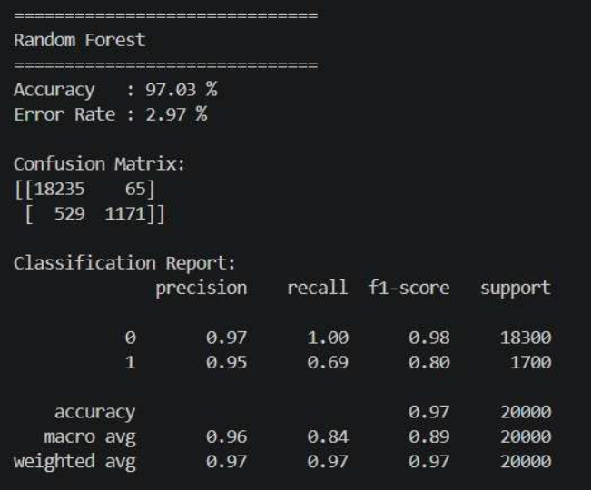

CASE 03 / STATISTICS 2 / PROJECT 2
Data Mining & Machine Learning
A comparative classification study using Decision Tree, Naïve Bayes and Random Forest on the Kaggle Diabetes Prediction Dataset.
The classification problem
The Statistics 2 Project 2 study investigated whether health and demographic variables could classify the diabetes status recorded in a public Kaggle dataset. The objective was to compare classification algorithms under the same evaluation setup.
Eight input features
One target
Diabetes status: 0 (negative) or 1 (positive).
100,000 total observations with eight predictors and one target.
Model development workflow
Categorical variables were encoded with pandas get_dummies. The report used an 80/20 stratified split, allocating 80,000 observations to training and 20,000 to testing. Evaluation included accuracy, error rate, confusion matrices and classification reports.
Compare classification performance
Reported test accuracy
Accuracy and error rate
| Model | Accuracy | Error |
|---|---|---|
| Decision Tree | 95.13% | 4.87% |
| Naïve Bayes | 86.51% | 13.49% |
| Random Forest | 97.03% | 2.97% |
Random Forest produced the highest test accuracy. However, class imbalance makes accuracy alone insufficient for evaluating positive-case detection.
Inspect the prediction errors
Random Forest confusion matrix
| Actual / Predicted | Negative | Positive |
|---|---|---|
| Negative | 18,235 | 65 |
| Positive | 529 | 1,171 |
20,000 test records. Recreated from the reported confusion matrix.


My documented contribution
- Contributed to collecting the Kaggle dataset.
- Participated in Python coding and classification model implementation.
- Contributed to report writing.
Source & scope
Statistics 2 — Project 2, Class 2, Group C, “Analysis of Diabetes Disease Classification Using Decision Tree, Naïve Bayes, and Random Forest Algorithms,” dated 3 May 2026. Contribution list p. 2; dataset p. 10; implementation pp. 11–15; outputs pp. 15–17. Baseline accuracy is calculated from the published confusion matrix, not a model trained in the original project.